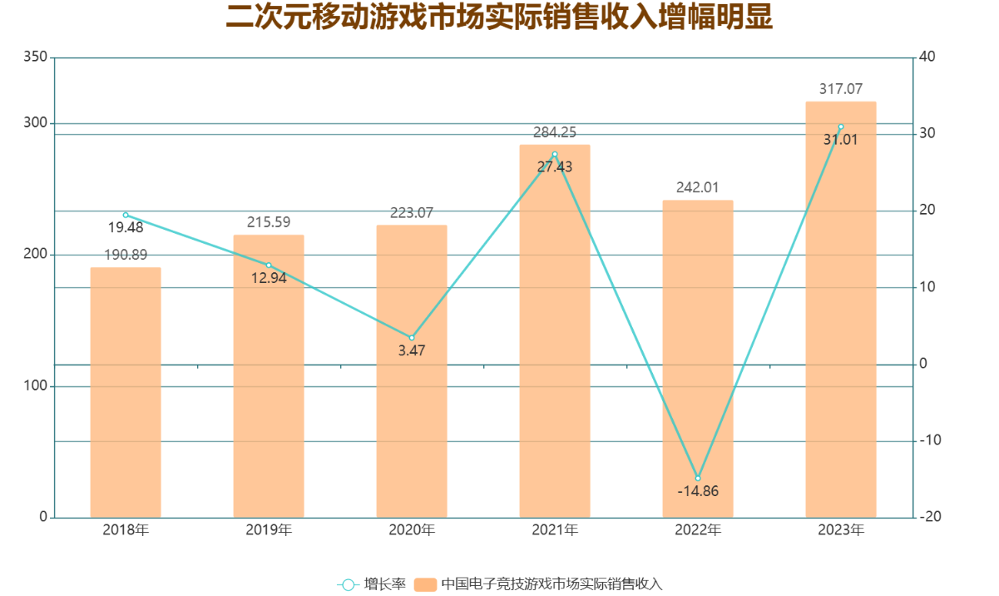
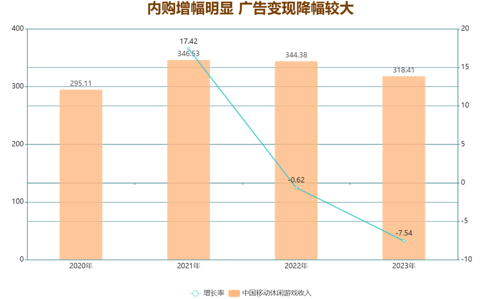

在2023年，中国电子竞技（电竞）游戏市场呈现出令人瞩目的增长势头，实际销售收入达到了惊人的1329.45亿元，同比增长12.85%，进一步印证了电竞游戏市场的蓬勃发展和广阔前景。这一成绩的取得，得益于多方面因素的积极作用。
首先，头部电竞游戏通过长线运营的成功策略，成功稳固了其市场基本盘。这些游戏凭借其深厚的玩家基础、成熟的赛事体系以及不断更新的游戏内容和技术革新，持续吸引和留住了众多忠实玩家，为市场贡献了稳定的收入流。
与此同时，市场上新兴的电竞游戏品类和自主研发的新品也迎来了快速发展，打破了传统电竞游戏的局限，引入了新的玩法和体验，赢得了玩家群体的广泛青睐。这些新兴力量的崛起，不仅丰富了电竞游戏的市场生态，也为整个电竞市场带来了显著的增量效应。
最后，2023年亚运会电竞赛事的成功举办，更是为中国电竞游戏市场增添了光彩。中国队在赛场上的出色表现，不仅赢得了国内外玩家和观众的热烈关注和支持，也大幅提升了电竞游戏在主流体育赛事中的认可度和影响力。这一盛事的成功，无疑进一步推动了电竞游戏的普及和市场收入的增长。
在2023年，中国二次元移动游戏市场以317.07亿元的实际销售收入，实现了令人瞩目的31.01%的同比增长，显示出了非凡的市场活力和增长潜力。这一显著的增幅背后，是国内二次元游戏用户群体对这类游戏的高度热情和愿意为其精品内容乐意付费的强烈态度所共同推动的结果。
国内的二次元游戏消费者不仅显示出较高的付费意愿，而且在经济条件允许的前提下，他们对于支持喜爱的游戏作品也有较强的付费能力。这种消费特性，加之游戏开发商在游戏内容、游戏体验和用户互动等方面的不断创新和优化，为市场的快速增长提供了坚实的基础。
在过去的一年中，二次元移动游戏领域的头部产品凭借其在更新和运营上的顺利进展，不仅在玩家群体中建立了牢固的地位，也显著提升了其盈利能力。此外，一些新推出的游戏作品以其独特的创意和高质量的执行力，表现出了惊人的市场表现，进一步加剧了整个市场收入的上升趋势。
需要指出的是，尽管二次元移动游戏市场整体增长迅速，但这一市场的收入集中度相当高，主要营收集中在少数头部产品之中。而那些非头部的二次元游戏产品，其营收水平相比之下普遍较低。这一现象反映出，在竞争激烈的二次元移动游戏市场中，品牌影响力、内容质量以及用户口碑等因素对于游戏成功与否起着至关重要的作用。
在2023年，中国休闲移动游戏市场的总收入达到了318.41亿元，相较于去年，呈现了7.54%的下降趋势。这一变化反映出，尽管休闲移动游戏以其轻松的游戏体验和广泛的用户基础而受到市场的欢迎，市场竞争的加剧和用户需求的变化仍对其收入水平构成了一定的影响。
在休闲移动游戏的收入构成中，通过内购方式产生的市场实际销售收入为200.87亿元，占据了较大比例，并被纳入到了中国游戏市场的实际销售收入统计中。这部分收入主要来源于用户直接在游戏内进行虚拟物品购买、服务订阅等付费行为，是游戏公司直接盈利的重要来源。
与此同时，广告变现收入达到了117.54亿元，这部分收入主要来源于游戏内的广告展示和用户点击，属于用户间接付费的范畴。由于广告收入并不直接源自用户针对游戏产品的购买行为，因此，在汇总中国游戏市场实际销售收入数据时，通常不将其计入。
休闲移动游戏市场收入的下降，一方面可能由于市场饱和度的增加，用户对已有游戏内容的新鲜感降低；另一方面，随着用户娱乐方式的多元化，休闲游戏面临来自其他娱乐形式的竞争。此外，广告市场的波动也可能影响到游戏公司通过广告变现的收益。